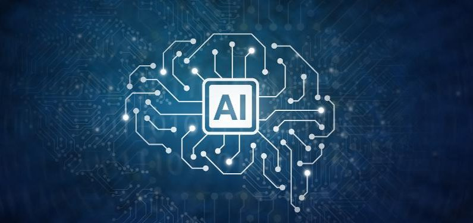
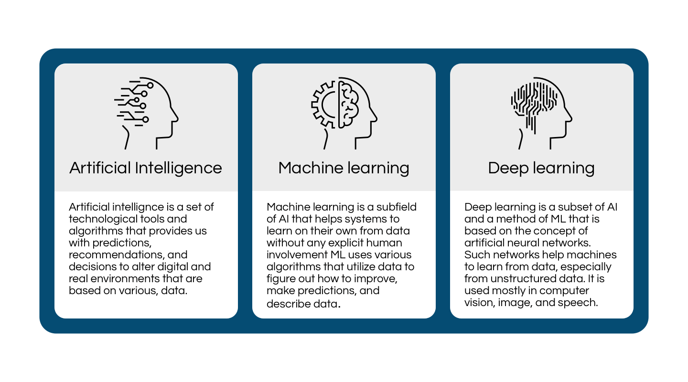
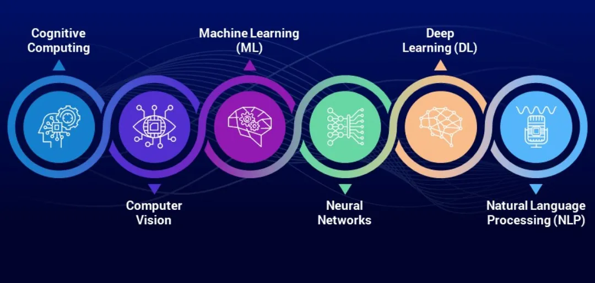

content :
What are the type of Artificial Intelling
What is Artificial narrow
Artificial General Intelligence
Artificial Super Intelligence
where (AI)used
How does Artificial Intelligence (AI) Work?
Building an AI system is a careful process of reverse-engineering human traits and capabilities in a machine,
and using its computational prowess to surpass what we are capable of.
To understand How Artificial Intelligence actually works, one needs to deep dive into the various sub-domains of Artificial Intelligence and understand how those domains could be applied to the various fields of the industry.
You can also take up an artificial intelligence course that will help you gain a comprehensive understanding.

Machine Learning:
ML teaches a machine how to make inferences and decisions based on past experience,It identifies patterns
and analyses past data to infer the meaning of these data points to reach a possible conclusion without having
This automation to reach conclusions by evaluating data saves human time for businesses and helps them make a better decisions.
Deep Learning:
Deep Learning is an ML technique. It teaches a machine to process inputs through layers in order to classify,
infer and predict the outcome.
Neural Networks:
Neural Networks work on similar principles to Human Neural cells. They are a series of algorithms that captures
the relationship between various underlying variables,and processes the data as a human brain does.
Natural Language Processing:
NLP is a science of reading, understanding, and interpreting a language by a machine.
Once a machine understands what the user intends to communicate.
Computer Vision:
Computer vision algorithms try to understand an image by breaking down an image and studying different parts of the object.
This helps the machine classify and learn from a set of images, to make a better output decision based on previous observations.
Cognitive Computing:
Cognitive computing algorithms try to mimic a human brain by analysing text/speech/images/objects
in a manner that a human does and tries to give the desired output.
Also, take up applications of artificial intelligence courses for free.
What are the Types of Artificial Intelligence?
Not all types of AI all the above fields simultaneously.
Different Artificial Intelligence entities are built for different purposes, and that’s how they vary.
AI can be classified based on Type 1 and Type 2 (Based on functionalities)
.
Here’s a brief introduction to the first type.
Types of Artificial Intelligence :
- Artificial Narrow Intelligence (ANI)
- Artificial General Intelligence (AGI)
- Artificial Super Intelligence (ASI)

What is Artificial Narrow Intelligence (ANI)?
This is the most common form of AI that you’d find in the market now.
These Artificial Intelligence systems are designed to solve one single problem and would be able to execute a single task really well.
By definition, they have narrow capabilities, like recommending a product for an e-commerce user or predicting the weather.
This is the only kind of Artificial Intelligence that exists today.
They’re able to come close to human functioning in very specific contextsand even surpass them in many instances,
but only excelling in very controlled environments with a limited set of parameters
To build a strong AI foundation, you can also upskill with the help of the free online course offered
by Great Learning Academy on Introduction to Artificial Intelligence. With the help of this course,
you can learn all the basic concepts required for you to build a career in AI.
What is Artificial General Intelligence (AGI)?
AGI is still a theoretical concept. It’s defined as AI which has a human-level of cognitive function,
across a wide variety of domains such as language processing,
image processing, computational functioning and reasoning and so on.
We’re still a long way away from building an AGI system. An AGI system would need to comprise of thousands
of Artificial Narrow Intelligence systems working in tandem,
communicating with each other to mimic human reasoning.
Even with the most advanced computing systems and infrastructures, such as Fujitsu’s K or IBM’s Watson,
it has taken them 40 minutes to simulate a single second of neuronal activity.
This speaks to both the immense complexity and interconnectedness of the human brain,
and to the magnitude of the challenge of building an AGI with our current resources.
What is Artificial Super Intelligence (ASI)?
We’re almost entering into science-fiction territory here, but ASI is seen as the logical progression from AGI.
An Artificial Super Intelligence (ASI) system would be able to surpass all human capabilities.
This would include decision making, taking rational decisions, and even includes things like making better art
and building emotional relationships
Once we achieve Artificial General Intelligence, AI systems would rapidly be able to improve their capabilities and advance into.

Where is Artificial Intelligence (AI) Used?
AI is used in different domains to give insights into user behaviour and give recommendations based on the data.
For example,
Google’s predictive search algorithm used past user data to predict what a user would type next in the search bar.
Netflix uses past user data to recommend what movie a user might want to see next,
making the user hooked onto the platform and increasing watch time.
Facebook uses past data of the users to automatically give suggestions to tag your friends,
based on the facial features in their images.
AI is used everywhere by large organisations to make an end user’s life simpler. The uses of Artificial Intelligence would broadly
fall under the data processing category,
which would include the following:
Searching within data, and optimising the search to give the most relevant results Logic-chains
for if-then reasoning, that can be applied to execute a string of commands based on parameters
Pattern-detection to identify significant patterns in large data set for unique insights
pplied probabilistic models for predicting future outcomes
How does ArtificialIntelling
Artificial.page1
Metaverse.page2
Robots.page4